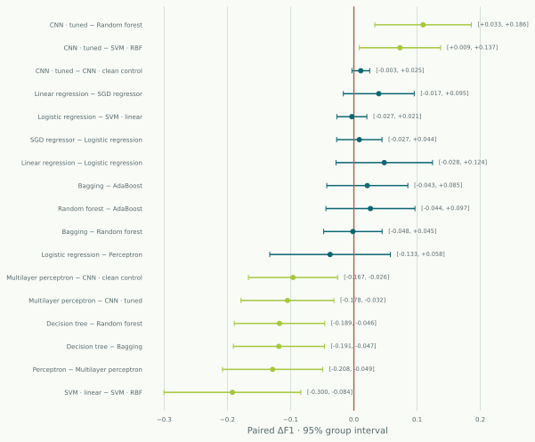
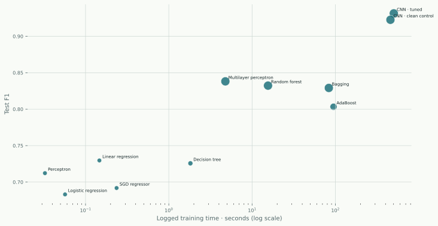

Validation was reused.
Models, thresholds, and designated seeds were selected with validation data. Validation figures are selection results and should be treated as optimistic.
Methodology · uncertainty · limits
Paired group resampling keeps both model scores on the same held-out sources. This is the comparison behind the winner claim.
Matched-group bootstrap
Each interval is left-model minus right-model F1 over the same resampled groups. Intervals crossing zero do not establish a difference or equivalence.

Training footprint
Bubble area uses each estimator’s reported complexity measure; x uses logged training seconds. Complexity units vary between models.

Locked protocol
c9bbaf626ca6a41ae07b92b681c3e2d98829fe16837548944a6bf7e10f3ac6b3350356a0b89a84bf6cf77fc4a1ffa36dea662151fbd5d79e66989cdfeec148487f963781336eae1e59ebcd7f7e1c3109150b698442,168 rows · 28 model/seed fitsBoundaries of this result
Models, thresholds, and designated seeds were selected with validation data. Validation figures are selection results and should be treated as optimistic.
The positive set covers two drone models. Generalization to new drone types, microphones, or locations has not been established.
Some negative examples may be identifiable through recording artefacts rather than drone content.
The intervals resample 247 represented groups. They do not represent new sites or acquisition conditions.
Version trail
Stage C model selection commit 7a189e5; final scoring runner commit e5c1228. The score lock records project commit 7f96378. Source data remains in the run reports and ledgers.